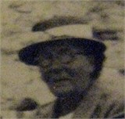
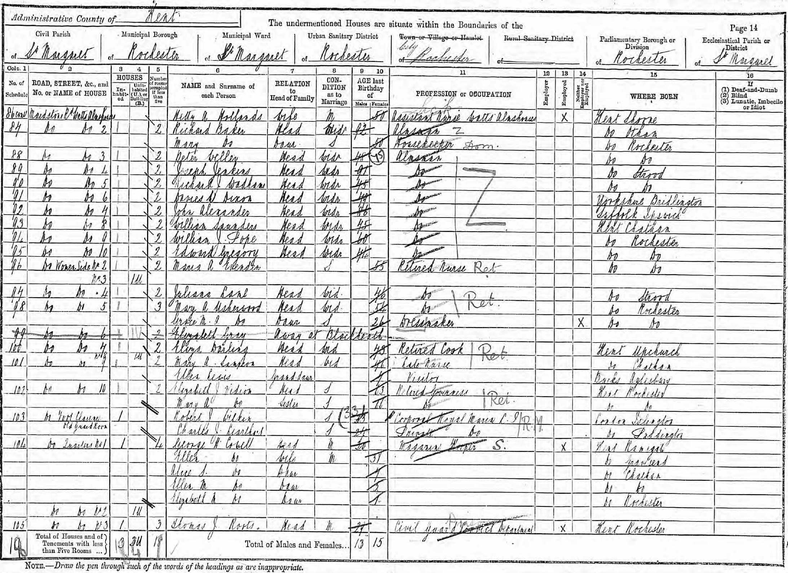
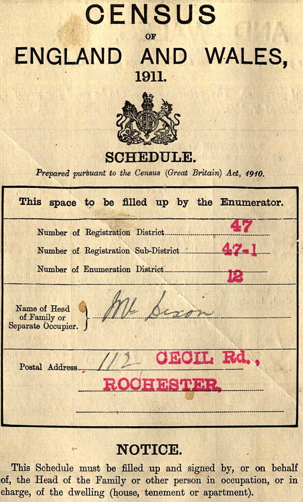
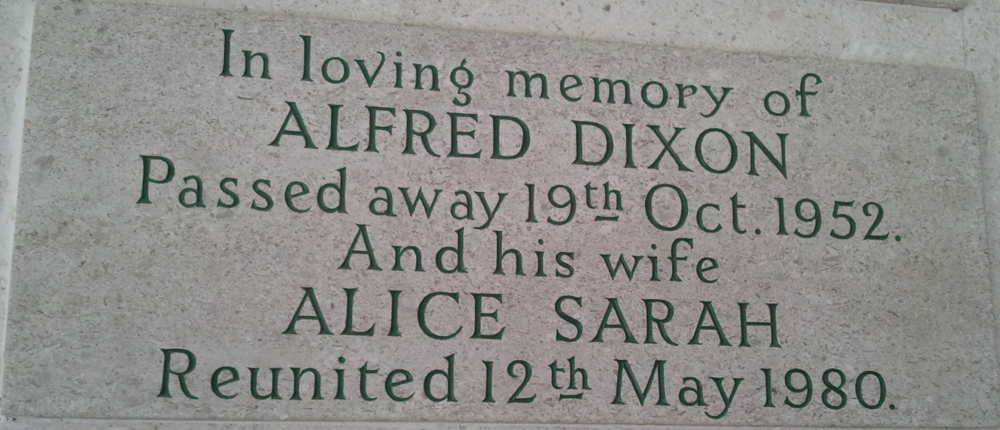
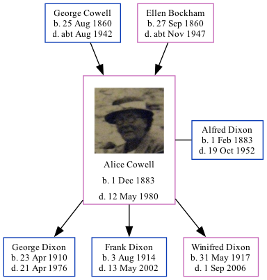

Alice Sarah Dixon (née Cowell) 1883 - 1980
[ Home ] | [ Calendar ] | [ Surnames Index ] | [ Family History ]The eldest of 3 children of George Cowell (an army ordnance depot foreman) and Ellen Bockham, Alice Cowell, the third cousin twice-removed on the mother's side of Nigel Horne, was born in Chatham, Kent, England on Dec 1, 18831,2,3, was baptized there on Dec 30, 1883 and married Alfred Dixon (an iron molder with whom she had 3 children: George Alfred, Frank Ernest and Winifred Alice) in Medway, Kent, England around Nov 19084.
Alice spent all of her life in Kent, England. Throughout her life, she lived in several places around the county: on Maidstone Road, Rochester on Apr 5, 18915; in Rochester on Mar 31, 19016; and on 112 Cecil Road, Rochester on Apr 2, 19117 and on Sep 29, 19391.
She died on May 12, 1980 in Whitstable, Kent3.
Parents
- George Henry was born on Aug 25, 1860
- Ellen was born on Sep 27, 1860
Children
- George Alfred was born on Apr 23, 1910
- Frank Ernest was born on Aug 3, 1914
- Winifred Alice was born on May 31, 1917
Citations
- 1939 Register - Findmypast (was the wife of the head of the household)
- England & Wales births 1837-2006 - Findmypast
- England & Wales deaths 1837-2007 - Findmypast
- England & Wales marriages 1837-2008 - Findmypast
- 1891 England, Wales & Scotland Census - Findmypast (was age 7 and the daughter of the head of the household)
- 1901 England, Wales & Scotland Census - Findmypast (was age 17 and the daughter of the head of the household)
- 1911 Census for England & Wales - Findmypast (was age 27 and the wife of the head of the household)
Media
Alice Cowell

1891 UK Census

1911 UK Census - page 2

1911 UK Census - page 1

Alice Cowell - Alfred Dixon - headstone

England & Wales births 1837-2006 - BMD/B/1883/4/AZ/000123/029
England Births & Baptisms 1538-1975 - R_935122635
England Births & Baptisms 1538-1975 - R_873097661
England & Wales deaths 1837-2007 - BMD/D/1980/2/AZ/000278/099
1939 Register Transcription - TNA-R39-1772-1772J-023-41
England & Wales marriages 1837-2008 - BMD/M/1908/4/AZ/000083/221
1911 Census for England & Wales - GBC/1911/RG14/03896/0023/2
1901 England, Wales & Scotland Census - GBC/1901/0005415329
1891 England, Wales & Scotland Census - GBC/1891/0005385104
1939 Register Transcription - TNA-R39-1772-1772J-023-40
Family Tree
Generated by Ged2Site. Last updated on Jul 20, 2025